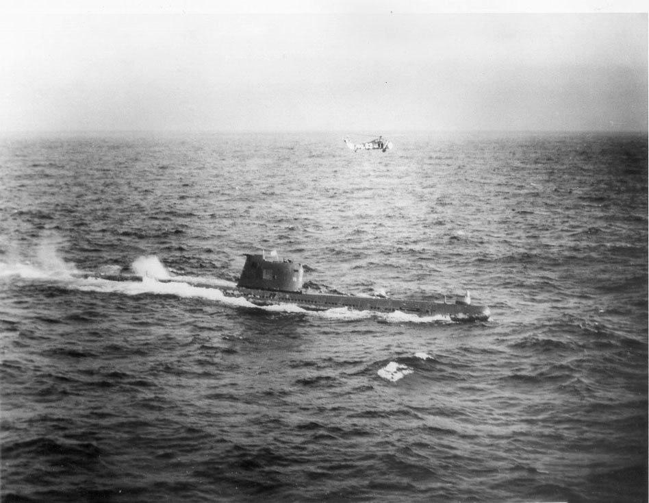
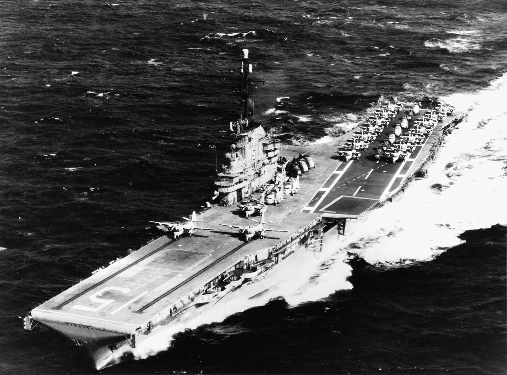
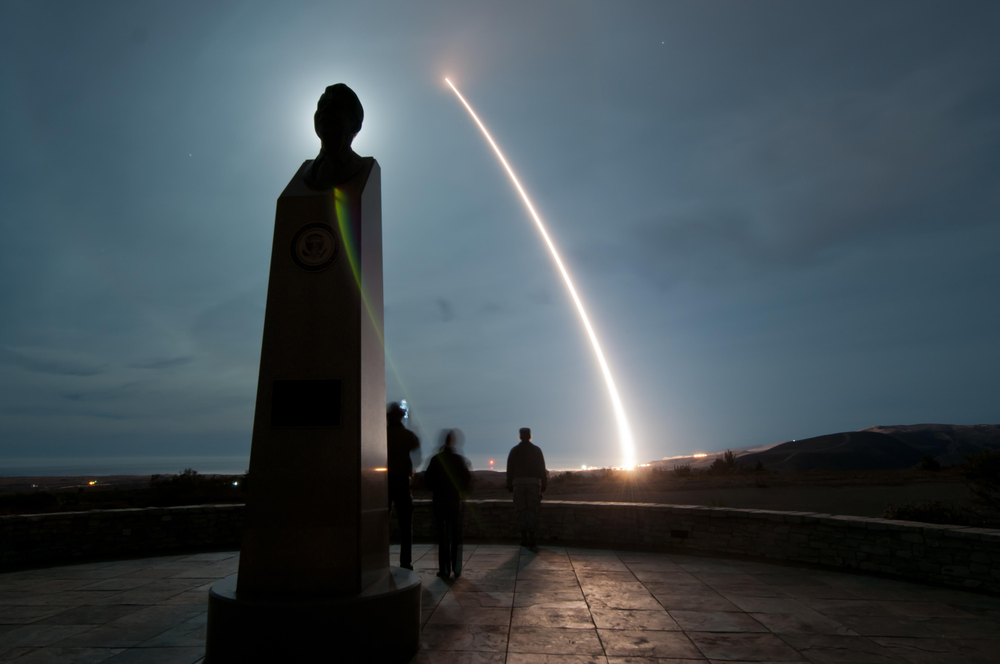

Sejarah Perang Dingin biasanya diceritakan sebagai duel dua raksasa: Kennedy lawan Khrushchev, Reagan lawan Andropov. Tapi dua momen paling dekat umat manusia dengan kiamat nuklir tidak diputuskan di ruang oval atau Kremlin — melainkan oleh dua perwira Soviet yang namanya nyaris tak dikenal: Vasili Arkhipov, yang pada 27 Oktober 1962 menolak meluncurkan torpedo nuklir dari kapal selam B-59; dan Stanislav Petrov, yang pada 26 September 1983 menolak meneruskan peringatan serangan rudal AS yang ternyata palsu.
27 Oktober 1962: "Black Saturday" di Bawah Laut Karibia
Hari itu adalah titik terpanas Krisis Rudal Kuba — hari yang sama pesawat mata-mata U-2 ditembak jatuh di atas Kuba dan pilotnya, Mayor Rudolf Anderson Jr., tewas. Di bawah permukaan laut Karibia, 11 kapal perusak AL AS dan kapal induk USS Randolph telah mengepung kapal selam Soviet B-59 — kapal selam diesel kelas Foxtrot yang, tanpa diketahui AS, membawa torpedo nuklir T-5.
AS menjatuhkan depth charge isyarat — peledak kecil untuk memaksa kapal selam muncul, bukan untuk menghancurkannya. Tapi kru B-59 sudah berhari-hari tanpa kontak dengan Moskow; terlalu dalam untuk menangkap siaran radio. Mereka tidak tahu perang sudah pecah atau belum — dan mengira ledakan-ledakan itu adalah awal Perang Dunia III. Di dalam lambung baja yang bergetar, suhu dilaporkan menembus 45°C; awak berjatuhan karena panas dan kekurangan oksigen.

Satu Orang yang Bilang "Tidak"
Kapten Valentin Savitsky meyakini perang mungkin sudah pecah dan ingin meluncurkan torpedo nuklir itu — senjata yang menurut perkiraan berdaya ledak ±10 kiloton (rentang antar-sumber). Yang membuat malam itu berbeda dari kapal selam Soviet lainnya: Vasili Arkhipov, 36 tahun, ikut berada di atas kapal sebagai kepala staf brigade kapal selam (bukan komandan kapal). Karena kehadirannya, peluncuran senjata khusus itu konon memerlukan persetujuan bulat tiga perwira senior: Savitsky, Perwira Politik Ivan Maslennikov, dan Arkhipov.
Hanya Arkhipov yang menolak. Ia berargumen bahwa depth charge itu adalah isyarat untuk muncul, bukan serangan — lalu membujuk Savitsky untuk naik ke permukaan dan menunggu perintah Moskow. B-59 muncul di antara kapal-kapal perang AS. Malam itu berlalu tanpa torpedo yang meluncur.
Catatan redaksi: mekanisme "tiga tanda tangan" yang terkenal ini diperdebatkan sejarawan. National Security Archive (2022) mencatat kisahnya bertumpu pada kesaksian peserta dan bahwa penceritaan populernya telah didramatisasi — termasuk soal apakah ada "voting" formal, dan apakah Arkhipov yang membujuk Savitsky atau Savitsky sendiri yang akhirnya memutuskan muncul. Yang didukung dokumen: ada perdebatan sengit, dan Arkhipov-lah yang menahan. Kami menyajikan versi populer dengan atribusi, bukan sebagai fakta bulat.
Arkhipov bukan orang sembarangan. Setahun sebelumnya ia adalah wakil komandan kapal selam nuklir K-19 saat kebocoran pendingin reaktor (4 Juli 1961) — insiden yang menewaskan belasan awak akibat radiasi. Ia tahu persis harga sebuah senjata nuklir. Pada 2002, direktur US National Security Archive Thomas Blanton menilai: "a guy called Vasili Arkhipov saved the world." Arkhipov sendiri tak pernah mengklaim itu — ia wafat 19 Agustus 1998, dan pada 2017 menerima Future of Life Award perdana (diterima putrinya, Elena).

26 September 1983: Komputer yang Berbohong
Dua puluh satu tahun kemudian, dunia nyaris kiamat lagi — kali ini karena mesin yang salah baca. Tak lama setelah tengah malam, di pusat komando peringatan dini Serpukhov-15 (barat daya Moskow), sistem satelit Soviet Oko melaporkan satu peluncuran ICBM dari AS — lalu total lima, semuanya dari Montana.
Konteksnya membuat malam itu ekstra berbahaya: tiga minggu sebelumnya (1 September 1983), Soviet menembak jatuh Korean Air Lines Flight 007 — 269 penumpang dan awak tewas. Ketegangan AS–Soviet berada di titik tertinggi sejak Krisis Kuba.
Petugas jaga malam itu: Letnan Kolonel Stanislav Petrov, 44 tahun, seorang insinyur. Prosedurnya sederhana dan mengerikan: validasi peringatan, teruskan ke rantai komando — yang bisa berujung pada perintah serangan balasan nuklir. Petrov tidak melakukannya. Ia menunggu bukti pendukung yang tak kunjung datang dan melaporkan insiden itu sebagai kerusakan sistem.

Alasan Seorang Insinyur: "Cuma Lima?"
Petrov punya tiga alasan, dan semuanya masuk akal: pertama, hanya lima rudal — serangan pertama AS yang asli pasti melibatkan ratusan rudal sekaligus; kedua, radar darat — yang ia anggap lebih bisa diandalkan — tidak mengonfirmasi apa pun; ketiga, sistem Oko masih baru (dinyatakan operasional 1982) dan ia meragukan keandalannya — ironisnya, ia ikut menulis prosedur yang seharusnya ia jalankan malam itu.
Investigasi belakangan membuktikan ia benar: sensor inframerah satelit salah mengira pantulan sinar matahari di awan berketinggian tinggi sebagai semburan mesin rudal — kombinasi langka antara orbit satelit dan posisi matahari yang tak pernah diuji para perancangnya.
Yang membuat kisah ini jujur — dan justru lebih kuat: Petrov mengaku peluangnya 50-50. "I had a funny feeling in my gut... I made a decision, and that was it." Ia tidak yakin ia benar. Dua puluh tiga menit kemudian, ketika tidak ada ledakan yang datang, barulah ia tahu ia selamat — dan dunia bersamanya.
Petrov tidak menyelamatkan dunia karena ia yakin. Ia menyelamatkannya karena ia berani ragu.
Hadiahnya: Teguran Soal Logbook
Negara tidak berterima kasih kepada keduanya. Arkhipov pulang tanpa medali untuk malam itu. Petrov sempat dipuji, lalu ditegur resmi karena tidak mengisi logbook dengan benar — ia memegang telepon di satu tangan dan interkom di tangan lain, katanya, "I don't have a third hand." Ia tidak dihukum, tidak pula diberi penghargaan; dipindah ke pos kurang sensitif dan pensiun dini pada 1984.
Insiden 1983 dirahasiakan total — dunia baru tahu pada 1998, lewat memoar mantan komandannya, Jenderal Yuri Votintsev. Setelahnya barulah penghargaan datang: Dresden Peace Prize 2013 (€25.000), dokumenter The Man Who Saved the World (2014), dan Future of Life Award 2018 (anumerta). Petrov wafat 19 Mei 2017 karena pneumonia, usia 77 — kabar kematiannya bahkan baru tersebar luas empat bulan kemudian. Sepanjang hidupnya ia menolak disebut pahlawan: "I was simply doing my job."
Analisis: Dibaca Pakai Lensa Ketahanan Nasional
1. Penilaian manusia harus tetap di atas mesin. Oko adalah sistem peringatan dini tercanggih yang dimiliki Soviet — dan ia salah membaca matahari sebagai rudal. Pelajaran untuk pembangunan sistem pertahanan modern: human-in-the-loop bukan hiasan. Teknologi baru justru paling rawan salah di awal masa operasionalnya.
2. Rantai komando yang sehat memberi ruang untuk ragu. Petrov melanggar prosedur — dan benar. Sistem yang menghukum keraguan prosedural (ia ditegur soal logbook) adalah sistem yang rapuh. Ketahanan komando = prosedur jelas + keberanian bertanya saat data tidak masuk akal.
3. Dalam krisis, yang menyelamatkan bukan senjata terbanyak, melainkan keputusan paling jernih. 1962 selesai lewat jalur belakang Kennedy–Khrushchev; 1983 selesai karena satu manusia tidak meneruskan alarm palsu. Bagi Indonesia yang menganut politik bebas-aktif: jangan terseret logika blok, jaga selalu ruang dialog dan verifikasi sebelum eskalasi.
Catatan redaksi: kami tidak mengklaim torpedo B-59 "pasti" memicu perang nuklir global bila diluncurkan — itu skenario kontrafaktual. Yang didukung sumber: peluncuran itu sangat mungkin memicu eskalasi tak terkendali. Begitu pula julukan "penyelamat dunia" adalah penilaian sejarawan dan lembaga (Blanton 2002; Future of Life Award), bukan fakta bulat — kami menyajikannya dengan atribusi.
Arsip & Referensi
Peristiwa di artikel ini diverifikasi silang dari sumber-sumber berikut:
- Wikipedia — "Vasily Arkhipov (vice admiral)", "1983 Soviet nuclear false alarm incident", "Cuban Missile Crisis" (linimasa & mekanisme, diverifikasi silang).
- National Security Archive — "The Underwater Cuban Missile Crisis at 60" (2022): debat historiografi mekanisme B-59.
- Future of Life Institute — penghargaan perdana untuk Arkhipov (2017).
- History.com — U-2 ditembak jatuh 27 Oktober 1962 (Black Saturday).
- Smithsonian Magazine — obituari & kisah Stanislav Petrov.
- migflug.com — rekonstruksi menit-per-menit insiden 26 September 1983.
- mariuscomper.uk — kronologi Petrov pasca-insiden (teguran logbook, penghargaan, wafat 2017).
- Smithsonian Institution (Time and Navigation) & The Free Dictionary — KAL 007, 1 September 1983, 269 korban.
- Wawancara Petrov (Washington Post, BBC 2013) via theblogera.com & theperspective.se.
Kredit foto arsip: B-59 dipaksa muncul (28–29 Okt 1962) — U.S. Navy, via Wikimedia Commons, public domain; USS Randolph — U.S. Navy, via Wikimedia Commons, public domain; uji luncur Minuteman III (ilustrasi) — U.S. Air Force, via Wikimedia Commons, public domain. Portrait Arkhipov & Petrov sengaja tidak dipakai: satu-satunya file yang tersedia berlisensi CC BY-SA (bukan public domain).
Catatan redaksi: hasil torpedo T-5 disajikan sebagai ±10 kiloton (rentang antar-sumber); dialog persis di B-59 disajikan dengan atribusi kesaksian; tahun penghargaan Association of World Citizens untuk Petrov bervariasi antar-sumber sehingga tidak kami cantumkan.
Dua kali dunia diselamatkan oleh orang yang berani berkata "tunggu dulu". Versi ringkasnya ada di Instagram & TikTok @jejakkuasa — follow biar nggak ketinggalan sejarah yang jarang diceritain berikutnya.